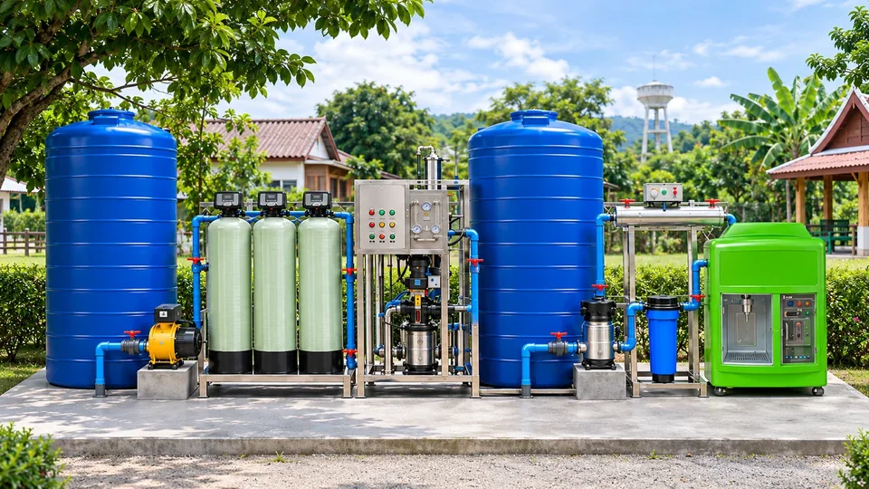
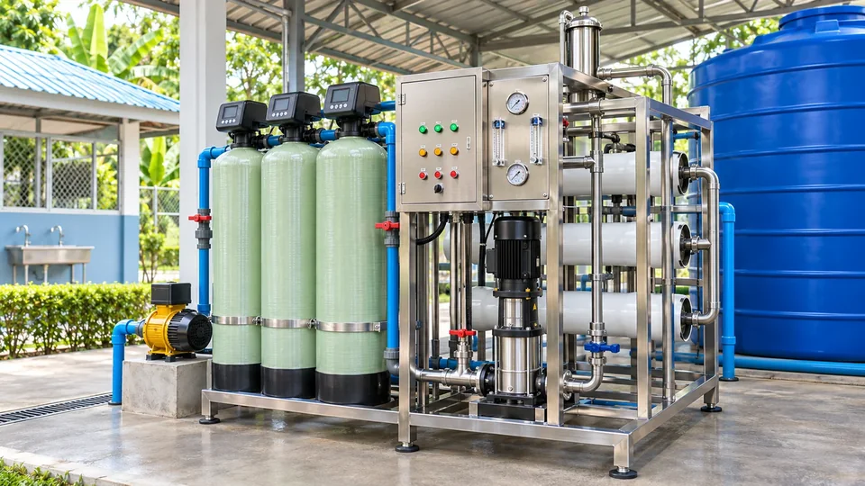

เครื่องกรองน้ำดื่ม RO 12Q กับ 24Q เลือกแบบไหนดี ต่างกันอย่างไร
เลือกขนาดเครื่องกรองน้ำ RO ให้พอดี เริ่มจากความต้องการน้ำดื่มและเวลาผลิต บทความนี้เปรียบเทียบ 12Q กับ 24Q จากข้อมูลชุดจริง พร้อมอธิบายถังพัก การเตรียมน้ำ และการดูแล เพื่อใช้วางแผนระบบสำหรับชุมชน โรงเรียน โรงงาน และหน่วยงาน

สารบัญ
เครื่องกรองน้ำดื่ม RO คืออะไร ต่างจากเครื่องกรองน้ำประปาอย่างไร?
RO หรือ Reverse Osmosis ใช้แรงดันให้น้ำผ่านเยื่อเมมเบรนเพื่อแยกสารละลายบางชนิดออกจากน้ำ เป็นหนึ่งในกระบวนการผลิตน้ำดื่ม ซึ่งยังต้องดูการเตรียมน้ำ การเก็บน้ำ และการจ่ายน้ำร่วมกัน ไม่ใช่ดูเพียงว่ามีเมมเบรนกี่ชิ้น
เครื่องกรองน้ำประปามักใช้ปรับคุณภาพน้ำใช้และลดปัญหาที่พบในน้ำดิบ ส่วนเครื่องกรองน้ำดื่ม RO มีเป้าหมายและเงื่อนไขน้ำเข้าต่างกัน หากต้องการทั้งน้ำใช้และน้ำดื่ม อาจแยกแนวทางจ่ายน้ำตามวัตถุประสงค์ อ่านเพิ่มเติมเรื่อง การเลือกเครื่องกรองน้ำประปาชุมชน ก่อนกำหนดระบบน้ำดื่ม
FDA อธิบายหลักการ RO ว่าเป็นการแยกผ่านเมมเบรนด้วยแรงดัน การมีระบบ RO จึงไม่ใช่เหตุให้ข้ามการตรวจคุณภาพน้ำหรือการบำรุงรักษา
เปรียบเทียบ RO 12Q กับ 24Q: ดูกำลังผลิตและถังพักให้แยกกัน
สำหรับชุดเครื่องกรองน้ำดื่ม RO ที่แสดงในเว็บไซต์ Sunnex รุ่น 12Q ระบุกำลังผลิต 12,000 ลิตรต่อวัน และรุ่น 24Q ระบุ 24,000 ลิตรต่อวัน โดยทั้งสองชุดแสดงถังพักน้ำดิบและถังพักน้ำดีขนาดอย่างละ 3,000 ลิตร
| รายการ | RO 12Q / 12 คิว | RO 24Q / 24 คิว |
|---|---|---|
| กำลังผลิตที่ระบุ | 12,000 ลิตรต่อวัน | 24,000 ลิตรต่อวัน |
| ถังพักน้ำดิบในชุดที่แสดง | 3,000 ลิตร | 3,000 ลิตร |
| ถังพักน้ำดีในชุดที่แสดง | 3,000 ลิตร | 3,000 ลิตร |
| แนวทางพิจารณา | เมื่อปริมาณน้ำและเวลาเดินระบบสอดคล้องกับกำลังผลิตรุ่นนี้ | เมื่อมีความต้องการมากขึ้นและระบบต้นทาง–ปลายทางรองรับ |
| ข้อมูลที่ต้องประเมินร่วม | คุณภาพน้ำ ชั่วโมงผลิต จุดจ่าย และพื้นที่ | คุณภาพน้ำ ชั่วโมงผลิต จุดจ่าย และพื้นที่ |
กำลังผลิตต่อวันกับความจุถังเป็นคนละค่า ถังพัก 3,000 ลิตรไม่ได้แปลว่าระบบผลิตได้เพียง 3,000 ลิตรต่อวัน และชื่อ 12Q ของเครื่องกรองน้ำดื่ม RO ไม่ควรนำไปเท่ากับกำลังผลิตต่อชั่วโมงของโรงกรองน้ำประปา
ตารางนี้สรุปข้อมูลจาก ชุดเครื่องกรองน้ำดื่ม RO ของ Sunnex ไม่ได้นำกำลังผลิตต่อวันไปหารเป็นอัตราต่อชั่วโมง เพราะต้องรู้ชั่วโมงผลิตที่ใช้อ้างอิงและเงื่อนไขของชุดก่อน การเลือกรุ่นจึงต้องประเมินความสามารถในการผลิตในเวลาที่หน้างานใช้งานได้จริง
เลือก 12Q หรือ 24Q จากปริมาณน้ำดื่มที่ใช้จริง
เริ่มจากปริมาณน้ำดื่มและน้ำประกอบอาหารที่ต้องการ ไม่ใช่นำน้ำใช้ทั้งอาคารมาเป็นยอดน้ำดื่มทั้งหมด โรงเรียน ชุมชน โรงงาน หรือหน่วยงานอาจมีช่วงรับน้ำหนาแน่นต่างกัน จึงควรบันทึกยอดใช้หลายวัน รวมวันที่มีความต้องการสูง
- ยอดใช้ต่อวัน: รวมปริมาณจากจุดจ่ายหรือบันทึกการใช้งานที่มีอยู่
- ช่วงเร่งด่วน: ระบุเวลาและปริมาณที่ต้องจ่ายพร้อมกัน เพื่อดูบทบาทของถังพักและปั๊มจ่าย
- ชั่วโมงที่เดินเครื่องได้: รวมข้อจำกัดด้านคนดูแล ไฟฟ้า น้ำดิบ และเวลาบำรุงรักษา
- แผนใช้งานเพิ่ม: เผื่อจากจำนวนผู้ใช้หรือจุดจ่ายที่วางแผนไว้จริง
สมมติหน่วยงานใช้น้ำดื่ม 8,000 ลิตรต่อวัน ตัวเลขนี้ยังไม่เพียงพอให้ฟันธงว่ารุ่น 12Q เหมาะทันที ต้องตรวจว่าผลิตได้ทันภายในเวลาที่มี และถังพักรองรับช่วงใช้มากหรือไม่ ส่วนรุ่น 24Q ก็ควรมีเหตุผลรองรับจากยอดใช้และแผนขยาย ไม่จำเป็นต้องเลือกใหญ่ที่สุดเสมอ
ดูทั้งระบบ: เตรียมน้ำ เมมเบรน ถังพัก และจุดจ่าย
รายการในหน้าสินค้ามีปั๊มน้ำดิบ ชุดเตรียมน้ำ Softener ชุด RO ถังพัก ระบบ UV และตู้จ่ายน้ำตามขอบเขตชุด แต่หน้าที่ของแต่ละส่วนต่างกัน ควรตรวจรายการที่รวมในข้อเสนอของรุ่นที่เลือกอีกครั้ง
- ชุดเตรียมน้ำ: ช่วยจัดการปัญหาน้ำเข้าที่อาจกระทบเมมเบรน โดยเลือกกระบวนการตามผลตรวจน้ำ
- ชุด RO: เป็นส่วนแยกผ่านเมมเบรน ต้องดูเงื่อนไขน้ำเข้าและการเดินระบบตามคู่มือ
- ถังพักน้ำดี: สำรองน้ำหลังผลิตและช่วยรองรับความต้องการช่วงสั้น ต้องปิดและดูแลความสะอาด
- UV และจุดจ่าย: ต้องตรวจตำแหน่งติดตั้ง การทำงาน และการบำรุงรักษา ไม่ถือว่ามีอุปกรณ์แล้วน้ำปลอดภัยตลอดไป

หากต้องวางถังเพิ่มเติม ควรเลือก ถังเก็บน้ำสำหรับระบบประปา ให้เหมาะกับน้ำที่เก็บ พื้นที่ และการล้าง ไม่กำหนดขนาดถังจากชื่อรุ่นเครื่องกรองเพียงอย่างเดียว
คุณภาพน้ำดิบมีผลต่อการเลือกเครื่องกรอง RO อย่างไร?
น้ำประปา น้ำบาดาล และน้ำผิวดินอาจมีปัญหาต่างกัน ควรใช้ผลตรวจน้ำล่าสุดประกอบการออกแบบ เช่น ความขุ่น ความกระด้าง เหล็ก แมงกานีส pH สารละลาย และรายการด้านจุลชีววิทยาหรือสารเฉพาะที่เกี่ยวข้องกับพื้นที่
หากน้ำมีตะกอนหรือความกระด้างสูง การเพิ่มกำลังผลิต RO อย่างเดียวไม่ได้แก้สาเหตุ ต้องประเมินการเตรียมน้ำก่อนเข้าเครื่องด้วย ดูความต่างของ ระบบกรองน้ำผิวดินและน้ำบาดาล และหน้าที่ของ สารกรองน้ำแต่ละชนิด ประกอบ
ค่า TDS ใช้ติดตามสารละลายในภาพรวมได้ แต่ไม่ใช่ผลตรวจครบทุกด้านของน้ำดื่ม ไม่ควรสรุปความปลอดภัยจากน้ำใส รสชาติ หรือค่า TDS เพียงตัวเดียว
ถ้าใช้น้ำน้อยกว่า 12Q มีขนาดอื่นให้พิจารณาหรือไม่?
หน้าสินค้าเดียวกันมีชุด RO 3Q และ 6Q ระบุกำลังผลิต 3,000 และ 6,000 ลิตรต่อวันตามลำดับ รุ่น 3Q แสดงถังพักน้ำดิบและน้ำดีอย่างละ 500 ลิตร ส่วน 6Q แสดงอย่างละ 1,000 ลิตร จึงควรเปรียบเทียบให้ตรงกับความต้องการก่อนข้ามไปเลือกรุ่นใหญ่
ดู ตารางเครื่องกรองน้ำดื่ม RO 3Q / 6Q / 12Q / 24Q เพื่อเทียบข้อมูลชุด ส่วนภาพประกอบบทความนี้อิงรูปลักษณ์สินค้า ไม่ได้ใช้ภาพเพื่อยืนยันขนาดหรือจำนวนอุปกรณ์ของแต่ละรุ่น
ก่อนติดตั้งต้องเตรียมพื้นที่และระบบประกอบอะไรบ้าง?
- พื้นที่วางเครื่องและถังที่รองรับน้ำหนักขณะใช้งาน พร้อมทางเข้าบำรุงรักษา
- แหล่งน้ำดิบและปั๊มต้นทางที่จ่ายน้ำได้สอดคล้องกับการเดินระบบ
- ไฟฟ้าและอุปกรณ์ป้องกันตามข้อกำหนดของชุดจริง ให้ช่างที่เหมาะสมตรวจ
- จุดระบายน้ำจากกระบวนการและงานล้าง โดยจัดการตามคุณภาพน้ำทิ้ง
- ตำแหน่งถังพัก ท่อจ่าย และตู้จ่ายน้ำที่ตรวจล้างและป้องกันการปนเปื้อนได้
ในการเปรียบเทียบราคา ควรดูขอบเขตอุปกรณ์และงานติดตั้งให้เหมือนกัน เช่น รวมถังพัก ปั๊ม งานท่อ งานไฟ และทดสอบน้ำหรือไม่ ไม่ควรเทียบเฉพาะราคาตัวเครื่องแล้วสรุปว่าชุดใดคุ้มกว่า
ดูแลเครื่องกรองน้ำดื่ม RO อย่างไรให้ติดตามปัญหาได้?
บันทึกอัตราน้ำผลิต แรงดัน สภาพไส้กรองและเมมเบรน คุณภาพน้ำ และประวัติการดูแล หากปริมาณน้ำลดลงหรือค่าต่างจากช่วงปกติ ควรตรวจสาเหตุก่อนปรับวาล์วหรือเปลี่ยนอุปกรณ์เอง รอบเปลี่ยนวัสดุและวิธีล้างต้องอิงคู่มือกับสภาพใช้งาน
ดูแลถังน้ำดี ท่อ และจุดจ่ายควบคู่กับเครื่องกรอง รวมถึงตรวจ UV ตามคู่มือ CDC แนะนำให้พิจารณาการบำรุงรักษาในการเลือกเครื่องกรอง หลักการนี้ช่วยย้ำว่าประสิทธิภาพต้องอาศัยการดูแลต่อเนื่อง ไม่ใช่กำลังผลิตเริ่มต้นเพียงอย่างเดียว
อ่าน แนวทางดูแลระบบประปาหมู่บ้าน เพื่อจัดบันทึกการตรวจ และหากต้องการเทียบค่าไฟ ต้นทุนต่อลิตร หรือน้ำทิ้ง ควรใช้ข้อมูลเดินเครื่องจริงของระบบนั้น ไม่ใช้ตัวเลขเฉลี่ยมายืนยันกับทุกรุ่น
คำถามที่พบบ่อยเกี่ยวกับเครื่องกรองน้ำ RO 12Q และ 24Q
RO 12Q กับ 24Q ต่างกันอย่างไร?
ชุดที่แสดงในเว็บไซต์ระบุกำลังผลิต 12,000 และ 24,000 ลิตรต่อวันตามลำดับ ทั้งสองชุดแสดงถังพักน้ำดิบและน้ำดีอย่างละ 3,000 ลิตร ต้องประเมินน้ำเข้าและเวลาเดินระบบร่วมด้วย
12Q หมายถึง 12,000 ลิตรต่อชั่วโมงหรือไม่?
สำหรับเครื่องกรองน้ำดื่ม RO ในบทความนี้ระบุเป็น 12,000 ลิตรต่อวัน ไม่ควรใช้หน่วยของโรงกรองน้ำประปามาแทนกัน
เลือกรุ่น 24Q เผื่อไว้ดีกว่าเสมอไหม?
ไม่เสมอไป ควรพิจารณายอดใช้น้ำ ช่วงใช้สูงสุด เวลาเดินระบบ พื้นที่ และแผนเพิ่มผู้ใช้ก่อนเลือกรุ่น
ถังพัก 3,000 ลิตรทำให้ผลิตได้เพียง 3,000 ลิตรต่อวันไหม?
ไม่ ความจุถังคือปริมาณเก็บพัก ส่วนกำลังผลิตคือปริมาณน้ำที่ระบบผลิตตามช่วงเวลาที่ระบุ ต้องนำสองส่วนมาประเมินร่วมกัน
มี RO 3Q และ 6Q ให้เทียบด้วยหรือไม่?
ในหน้าสินค้ามีรุ่น 3Q และ 6Q ระบุกำลังผลิต 3,000 และ 6,000 ลิตรต่อวัน เป็นทางเลือกสำหรับประเมินให้ตรงกับความต้องการ
RO 12Q กับ 24Q ใช้ไฟและมีน้ำทิ้งเท่าไร?
ต้องใช้สเปกและข้อมูลการเดินระบบของชุดจริงร่วมกับคุณภาพน้ำป้อน บทความนี้จึงไม่ระบุตัวเลขค่าไฟ ต้นทุนต่อลิตร หรือสัดส่วนน้ำทิ้งตายตัว
น้ำใสหรือ TDS ต่ำแปลว่าดื่มได้เลยไหม?
ไม่ควรตัดสินจากสองอย่างนี้เพียงอย่างเดียว ต้องตรวจคุณภาพน้ำตามการใช้งานและดูแลระบบเก็บกับจ่ายน้ำด้วย